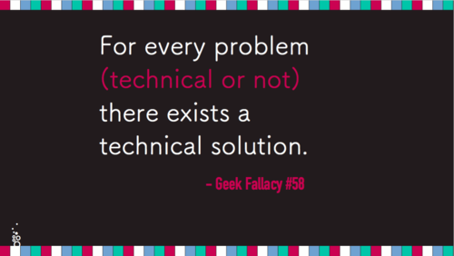

Talks
The Bait and Switch of Open Source
Open Source sells itself as being about technical problems--delightfully thorny technical problems, at that. However, successful projects are filled with people, which introduces a whole different set of problems.
This talk tells a story about the many ways in which things went badly wrong because I didn’t treat people problems as first-class citizens in exercism.io.d Sandi Metz and I are writing the book to prove it.
May 20, 2016